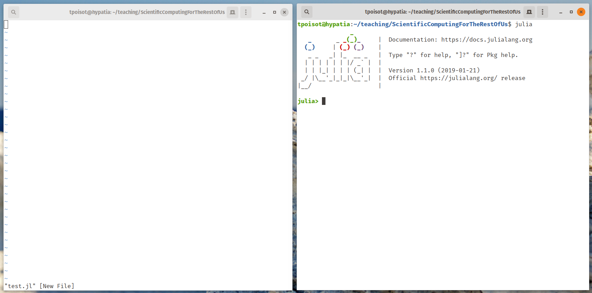

Programming is intimidating
If your working environment looks anything like mine, the first thing you may see on a new project will look like this - an empty text editor, and an empty code interpreter. This is highly intimidating.

Facing an empty text editor at the beginning of a programming task is like facing an empty page at the beginning of a writing project. To make it easier to work through, one really good (but also really uncommon) approach is to walk away from the computer. Instead of trying to write code, we will first try to articulate the structure of our project - and not jumping to our keyboard works really well for this.
In this lesson, we will see how we can optimize our preparation for any project, by having good project organization, thinking about the flowchart of our program, and writing pseudo-code as needed.
After this lesson, you will be able to …
- … organize a project
- … write the flowchart of your program
- … work out some of the most complex pieces using pseudo-code
Project management
Here is a productivity tip: work in such a way that you do not need to think about the non-important parts of your project. For us, this means having a standard layout for any project, and using it consistently. We will suggest one such layout below, but this is not the only one. There are an infinity of them, and the one that works is the one that works for you.
Still, there are some good guidelines to follow.
First, a project is a folder, everything in the project belongs to the folder, and everything outside the folder cannot belong to the project. This is important because it maximizes the chances that you can copy your project to another computer, and have it “just work”. Of course in real life, things seldom “just work”, and this is why we should pay extra care to the practices that maximise the chances of it being the case.
Second, file paths are not your friends. By far the biggest obstacle to reproducibility is the difference in ways to tell the computer where files are. We encourage to use relative paths, relative specifically to the folder in which your project lives. So, for example,
/home/tim/ohno/my/computer/is_a_mess/MyCoolProject/data/file.txtis an absolute file path, from the very root of where files live. But I am
only working on MyCoolProject at the moment, so the relative path of this
file is
data/file.txtOr is it? On my machine running Linux, sure. But on a Windows machine I would use in a computer lab? The file would be at
data\file.txtThis difference between / and \ is trivial to us, but not to the computer.
So to avoid these issues, it is better to let your programming language
construct the path correclty. Julia has the joinpath function, and so we
would refer to this file as:
joinpath("data", "file.txt")"data/file.txt"
Third, and final principle, similar things should be grouped together. In other
words, it will be easier to navigate our project if there is a folder called
data and it contains data, a folder called figures and it contains figures,
and a folder called code which contains code. The name and variety of these
folders is left up to you.
With this in mind, here is a possible template for a project.
.
├── .git # We use version control, always!
│ └── ...
├── artifacts # Outputs that are not figures go here
│ └── summary.csv
├── code # Code that creates something goes here
│ ├── figure01.jl
│ └── simulations.jl
├── data # Raw data goes here
│ └── BCI.data
├── lib # Useful functions go here
│ ├── environmentaldata.jl
│ └── model.jl
├── LICENSE # We use a license, always!
├── README.md # Also mandatory: a README
├── Project.toml
├── Manifest.toml
└── text # This folder can store notes and documents
└── notes.mdFlowcharts
One of the most powerful tool to plan a programming task is to draw a flochart. In simple terms, a flowchart will let you map the different steps that the program will have to follow, and see what is required for each of them. To illustrate, we will use a flowchart not of a program, but of a pancake recipe.
At the beginning, it can be useful to break the task down into coarse steps:
This is not much to look at, but this is a very high-level view of what we want to achieve. It is also easy to zoom in on every task, and try to further break it down into smaller tasks. Let’s do this for the task at left: prepare.
“All” we have done so far is to split the prepare step into the preparation of solid and liquid ingredients. To come up with a full flowchart, we need to repeat this process until we are satisfied by the completeness of it:
Notice that we have introduced a new shape: the rotated square will be used to note actions, and anything else will be either an output or an input of these actions.
If we repeat the exercise for most of the boxes, we may end up with a flowchart like this. It might seem a little overwhelming at first, but this is a helpful document. It maps out the precise steps and processes in your project, and can help you both to plan what to write, but also to understand what you have written previously.
Pseudo-code
- …